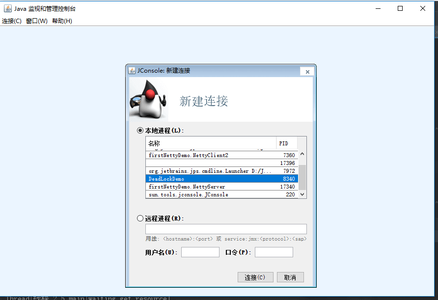
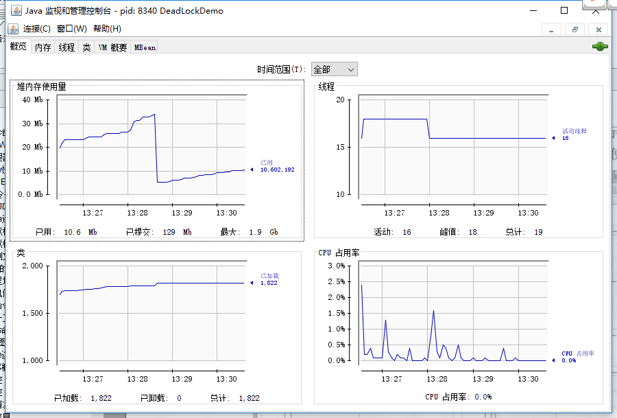
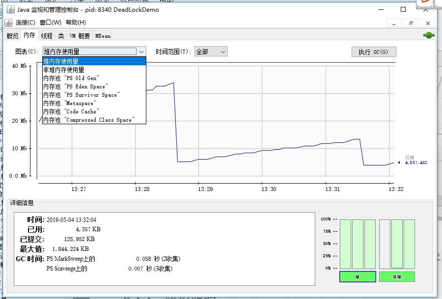
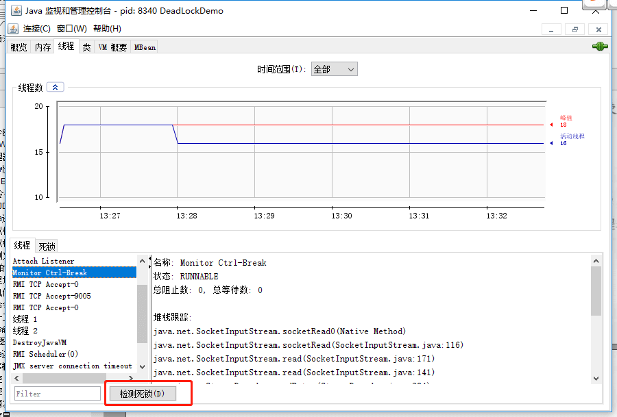

JDK监控和故障处理工具总结
JDK 命令行工具
这些命令在 JDK 安装目录下的 bin 目录下：
jps(JVM Process Status）: 类似 UNIX 的ps命令。用于查看所有 Java 进程的启动类、传入参数和 Java 虚拟机参数等信息；jstat（JVM Statistics Monitoring Tool）: 用于收集 HotSpot 虚拟机各方面的运行数据;jinfo(Configuration Info for Java) : Configuration Info for Java,显示虚拟机配置信息;jmap(Memory Map for Java) : 生成堆转储快照;jhat(JVM Heap Dump Browser) : 用于分析 heapdump 文件，它会建立一个 HTTP/HTML 服务器，让用户可以在浏览器上查看分析结果。JDK9 移除了 jhat；jstack(Stack Trace for Java) : 生成虚拟机当前时刻的线程快照，线程快照就是当前虚拟机内每一条线程正在执行的方法堆栈的集合。
jps:查看所有 Java 进程
jps(JVM Process Status) 命令类似 UNIX 的 ps 命令，用于列出当前用户有权访问且能被该工具发现的 JVM 进程，并不保证枚举系统中的所有 Java 进程。
jps：显示虚拟机执行主类名称以及这些进程的本地虚拟机唯一 ID（Local Virtual Machine Identifier,LVMID）。jps -q：只输出进程的本地虚拟机唯一 ID。
C:\Users\SnailClimb>jps
7360 NettyClient2
17396
7972 Launcher
16504 Jps
17340 NettyServerjps -l:输出主类的全名，如果进程执行的是 Jar 包，输出 Jar 路径。
C:\Users\SnailClimb>jps -l
7360 firstNettyDemo.NettyClient2
17396
7972 org.jetbrains.jps.cmdline.Launcher
16492 sun.tools.jps.Jps
17340 firstNettyDemo.NettyServerjps -v：输出虚拟机进程启动时 JVM 参数。
jps -m：输出传递给 Java 进程 main() 函数的参数。
jstat: 监视虚拟机各种运行状态信息
jstat（JVM Statistics Monitoring Tool） 使用于监视虚拟机各种运行状态信息的命令行工具。 它可以显示本地或者远程（需要远程主机提供 RMI 支持）虚拟机进程中的类信息、内存、垃圾收集、JIT 编译等运行数据，在没有 GUI，只提供了纯文本控制台环境的服务器上，它将是运行期间定位虚拟机性能问题的首选工具。
jstat 命令使用格式：
jstat -<option> [-t] [-h<lines>] <vmid> [<interval> [<count>]]比如 jstat -gc -h3 31736 1000 10 表示分析进程 id 为 31736 的 gc 情况，每隔 1000ms 打印一次记录，打印 10 次停止，每 3 行后打印指标头部。
常见的 option 如下：
jstat -class vmid：显示 ClassLoader 的相关信息；jstat -compiler vmid：显示 JIT 编译的相关信息；jstat -gc vmid：显示与 GC 相关的堆信息；jstat -gccapacity vmid：显示各个代的容量及使用情况；jstat -gcnew vmid：显示新生代信息；jstat -gcnewcapacity vmid：显示新生代大小与使用情况；jstat -gcold vmid：显示老年代的行为统计；在现代 JDK 中，输出还包含元空间和压缩类空间等统计信息；jstat -gcoldcapacity vmid：显示老年代的大小；jstat -gcpermcapacity vmid：显示永久代大小，从 JDK 8 开始该选项不存在了；现代 JDK 可使用-gcmetacapacity查看元空间容量统计；jstat -gcutil vmid：显示垃圾收集信息；
另外，加上 -t 参数可以在输出信息上加一个 Timestamp 列，显示程序的运行时间。
jinfo: 实时地查看和调整虚拟机各项参数
jinfo vmid :输出当前 jvm 进程的全部参数和系统属性（第一部分是系统的属性，第二部分是 JVM 的参数）。
jinfo -flag name vmid :输出对应名称的参数的具体值。比如输出 MaxHeapSize。下面查看和动态调整 PrintGC 的示例针对 JDK 8；JDK 9 及之后的 GC 日志应使用统一日志参数 -Xlog，并可通过 jcmd VM.log 在运行时调整。
C:\Users\SnailClimb>jinfo -flag MaxHeapSize 17340
-XX:MaxHeapSize=2124414976
C:\Users\SnailClimb>jinfo -flag PrintGC 17340
-XX:-PrintGCjinfo 可以在不重启虚拟机的情况下动态修改一部分标记为可管理的 JVM 参数，并非所有参数都支持运行时修改。请看下面的 JDK 8 示例：
jinfo -flag [+|-]name vmid 开启或者关闭对应名称的参数。
C:\Users\SnailClimb>jinfo -flag PrintGC 17340
-XX:-PrintGC
C:\Users\SnailClimb>jinfo -flag +PrintGC 17340
C:\Users\SnailClimb>jinfo -flag PrintGC 17340
-XX:+PrintGCjmap:生成堆转储快照
jmap（Memory Map for Java）命令用于生成堆转储快照。 如果不使用 jmap 命令，要想获取 Java 堆转储，可以使用 -XX:+HeapDumpOnOutOfMemoryError 参数，让虚拟机在 OOM 异常出现之后自动生成 dump 文件。Linux/macOS 下的 kill -3 <pid> 发送的是 SIGQUIT，HotSpot 会把 Java 线程栈打印到标准错误流，得到的是线程转储而不是堆转储。
jmap 的作用并不仅仅是获取 dump 文件，它还可以查询终结器队列、Java 堆和类加载器等信息，具体子命令随 JDK 版本变化。永久代只存在于旧版 HotSpot，现代 JDK 的相关输出是元空间或类加载器统计。和 jinfo 一样，jmap 的部分功能还会受到操作系统和目标进程附加权限的限制。
示例：将指定应用程序的堆快照输出到桌面。后面，可以通过 jhat、Visual VM 等工具分析该堆文件。
C:\Users\SnailClimb>jmap -dump:format=b,file=C:\Users\SnailClimb\Desktop\heap.hprof 17340
Dumping heap to C:\Users\SnailClimb\Desktop\heap.hprof ...
Heap dump file createdjhat: 分析 heapdump 文件
jhat 用于分析 heapdump 文件，它会建立一个 HTTP/HTML 服务器，让用户可以在浏览器上查看分析结果。
C:\Users\SnailClimb>jhat C:\Users\SnailClimb\Desktop\heap.hprof
Reading from C:\Users\SnailClimb\Desktop\heap.hprof...
Dump file created Sat May 04 12:30:31 CST 2019
Snapshot read, resolving...
Resolving 131419 objects...
Chasing references, expect 26 dots..........................
Eliminating duplicate references..........................
Snapshot resolved.
Started HTTP server on port 7000
Server is ready.注意⚠️：JDK9 移除了 jhat（JEP 241: Remove the jhat Tool），你可以使用其替代品 Eclipse Memory Analyzer Tool (MAT) 和 VisualVM，这也是官方所推荐的。
jstack :生成虚拟机当前时刻的线程快照
jstack（Stack Trace for Java）命令用于生成虚拟机当前时刻的线程快照。线程快照就是当前虚拟机内每一条线程正在执行的方法堆栈的集合.
生成线程快照的目的主要是定位线程长时间出现停顿的原因，如线程间死锁、死循环、请求外部资源导致的长时间等待等都是导致线程长时间停顿的原因。线程出现停顿的时候通过 jstack 来查看各个线程的调用堆栈，就可以知道没有响应的线程到底在后台做些什么事情，或者在等待些什么资源。
下面的代码通过休眠增大两个线程互相持有锁的概率，用于演示如何通过 jstack 检查死锁。线程调度并无确定性，因此它不能严格保证每次运行都复现死锁。
public class DeadLockDemo {
private static Object resource1 = new Object();//资源 1
private static Object resource2 = new Object();//资源 2
public static void main(String[] args) {
new Thread(() -> {
synchronized (resource1) {
System.out.println(Thread.currentThread() + "get resource1");
try {
Thread.sleep(1000);
} catch (InterruptedException e) {
e.printStackTrace();
}
System.out.println(Thread.currentThread() + "waiting get resource2");
synchronized (resource2) {
System.out.println(Thread.currentThread() + "get resource2");
}
}
}, "线程 1").start();
new Thread(() -> {
synchronized (resource2) {
System.out.println(Thread.currentThread() + "get resource2");
try {
Thread.sleep(1000);
} catch (InterruptedException e) {
e.printStackTrace();
}
System.out.println(Thread.currentThread() + "waiting get resource1");
synchronized (resource1) {
System.out.println(Thread.currentThread() + "get resource1");
}
}
}, "线程 2").start();
}
}Output
Thread[线程 1,5,main]get resource1
Thread[线程 2,5,main]get resource2
Thread[线程 1,5,main]waiting get resource2
Thread[线程 2,5,main]waiting get resource1线程 A 通过 synchronized (resource1) 获得 resource1 的监视器锁，然后通过 Thread.sleep(1000); 让线程 A 休眠 1s 为的是让线程 B 得到执行然后获取到 resource2 的监视器锁。线程 A 和线程 B 休眠结束了都开始企图请求获取对方的资源，然后这两个线程就会陷入互相等待的状态，这也就产生了死锁。
通过 jstack 命令分析：
C:\Users\SnailClimb>jps
13792 KotlinCompileDaemon
7360 NettyClient2
17396
7972 Launcher
8932 Launcher
9256 DeadLockDemo
10764 Jps
17340 NettyServer
C:\Users\SnailClimb>jstack 9256输出的部分内容如下：
Found one Java-level deadlock:
=============================
"线程 2":
waiting to lock monitor 0x000000000333e668 (object 0x00000000d5efe1c0, a java.lang.Object),
which is held by "线程 1"
"线程 1":
waiting to lock monitor 0x000000000333be88 (object 0x00000000d5efe1d0, a java.lang.Object),
which is held by "线程 2"
Java stack information for the threads listed above:
===================================================
"线程 2":
at DeadLockDemo.lambda$main$1(DeadLockDemo.java:31)
- waiting to lock <0x00000000d5efe1c0> (a java.lang.Object)
- locked <0x00000000d5efe1d0> (a java.lang.Object)
at DeadLockDemo$$Lambda$2/1078694789.run(Unknown Source)
at java.lang.Thread.run(Thread.java:748)
"线程 1":
at DeadLockDemo.lambda$main$0(DeadLockDemo.java:16)
- waiting to lock <0x00000000d5efe1d0> (a java.lang.Object)
- locked <0x00000000d5efe1c0> (a java.lang.Object)
at DeadLockDemo$$Lambda$1/1324119927.run(Unknown Source)
at java.lang.Thread.run(Thread.java:748)
Found 1 deadlock.可以看到 jstack 命令已经帮我们找到发生死锁的线程的具体信息。
JDK 可视化分析工具
JConsole:Java 监视与管理控制台
JConsole 是基于 JMX 的可视化监视、管理工具。可以很方便的监视本地及远程服务器的 java 进程的内存使用情况。你可以在控制台输入 jconsole 命令启动或者在 JDK 目录下的 bin 目录找到 jconsole.exe 然后双击启动。
连接 Jconsole

如果需要使用 JConsole 连接远程进程，可以在远程 Java 程序启动时加上下面这些参数:
-Djava.rmi.server.hostname=外网访问 ip 地址
-Dcom.sun.management.jmxremote.port=60001 //监控的端口号
-Dcom.sun.management.jmxremote.authenticate=false //关闭认证
-Dcom.sun.management.jmxremote.ssl=false这组示例同时关闭了认证和 SSL，只适合受控的本地开发或隔离测试环境。Oracle 官方明确指出，该配置允许能访问端口的远程用户监控和控制应用，生产环境应启用认证与安全传输，并通过网络访问控制限制暴露范围。
在使用 JConsole 连接时，远程进程地址如下：
外网访问 ip 地址:60001查看 Java 程序概况

内存监控
JConsole 可以显示当前内存的详细信息。不仅包括堆内存/非堆内存的整体信息，还可以细化到 eden 区、survivor 区等的使用情况，如下图所示。
点击右边的“执行 GC(G)”按钮会通过管理接口发出显式垃圾回收请求，其语义类似于调用 System.gc()；JVM 不保证一定执行回收，也不保证一定以某一种 Full GC 形式执行。
- 新生代 GC（Minor GC）:指发生新生代的垃圾收集动作，Minor GC 非常频繁，回收速度一般也比较快。
- 老年代 GC（Major GC/Old GC）：只针对老年代的收集。不同资料对 Major GC 的用法并不完全一致，有时也用它指整堆收集，因此阅读日志时应结合具体收集器和日志事件判断。
- 整堆收集（Full GC）：对整个 Java 堆进行收集，通常会带来较长的停顿；耗时与堆大小、存活对象、收集器等因素有关，不能用固定倍数与 Minor GC 比较。

线程监控
类似我们前面讲的 jstack 命令，不过这个是可视化的。
最下面有一个“检测死锁 (D)”按钮，点击这个按钮可以自动为你找到发生死锁的线程以及它们的详细信息。

Visual VM:多合一故障处理工具
VisualVM 提供在 Java 虚拟机 (Java Virtual Machine, JVM) 上运行的 Java 应用程序的详细信息。在 VisualVM 的图形用户界面中，您可以方便、快捷地查看多个 Java 应用程序的相关信息。Visual VM 官网：https://visualvm.github.io/。Visual VM 中文文档:https://visualvm.github.io/documentation.html。
下面这段话摘自《深入理解 Java 虚拟机》。
VisualVM（All-in-One Java Troubleshooting Tool）提供运行监视、故障处理和性能分析（Profiling）等功能。Java VisualVM 曾随 Oracle JDK 6～8 发布，从 Oracle JDK 9 起不再随 JDK 捆绑；现在通常需要单独下载安装 VisualVM。是否直接在生产环境中启用性能分析，应根据采样或插桩模式及实际开销谨慎评估。
VisualVM 基于 NetBeans 平台开发，因此他一开始就具备了插件扩展功能的特性，通过插件扩展支持，VisualVM 可以做到：
- 显示虚拟机进程以及进程的配置、环境信息（jps、jinfo）。
- 监视应用程序的 CPU、GC、堆、方法区以及线程的信息（jstat、jstack）。
- dump 以及分析堆转储快照（jmap、jhat）。
- 方法级的程序运行性能分析，找到被调用最多、运行时间最长的方法。
- 离线程序快照：收集程序的运行时配置、线程 dump、内存 dump 等信息建立一个快照，可以将快照发送开发者处进行 Bug 反馈。
- 其他 plugins 的无限的可能性……
这里就不具体介绍 VisualVM 的使用，如果想了解的话可以看:
- https://visualvm.github.io/documentation.html
- https://www.ibm.com/developerworks/cn/java/j-lo-visualvm/index.html
MAT：内存分析器工具
MAT（Memory Analyzer Tool）是一款快速便捷且功能强大丰富的 JVM 堆内存离线分析工具。其通过展现 JVM 异常时所记录的运行时堆转储快照（Heap dump）状态（正常运行时也可以做堆转储分析），帮助定位内存泄漏问题或优化大内存消耗逻辑。
在遇到 OOM 和 GC 问题的时候，我一般会首选使用 MAT 分析 dump 文件在，这也是该工具应用最多的一个场景。
关于 MAT 的详细介绍推荐下面这两篇文章，写的很不错：
写在最后
如果内容对你有帮助的话，欢迎顺手给 JavaGuide 点一个免费的 Star 支持一下：GitHub | Gitee。
JavaGuide 已持续维护近七年，累计 6100+ 次提交，来自 620+ 位贡献者共同完善。你的 Star、反馈和 PR，都是这个项目继续更新的动力。
如果你正在准备后端/AI 应用开发面试，也可以了解一下我的知识星球，里面包括后端和 AI 实战项目、简历优化、一对一提问和高频考点资料，已经持续维护六年。